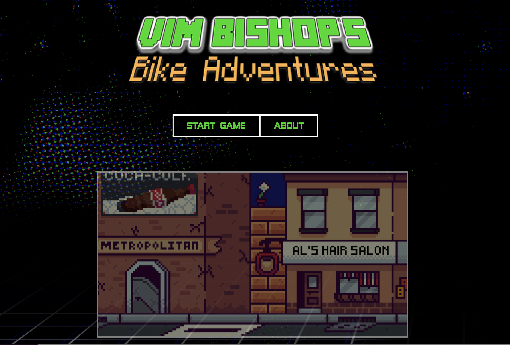
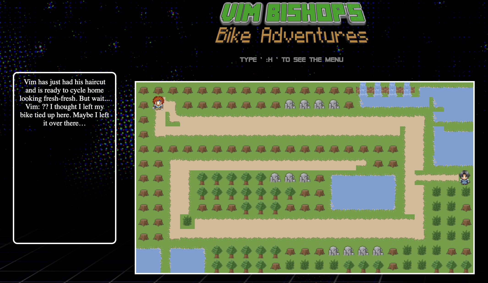
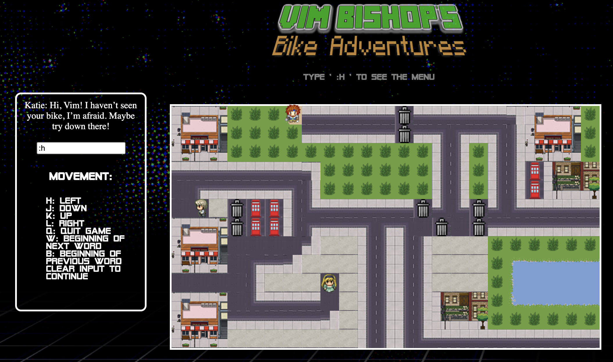

Javascript/React

Deployed here!
This was my final group project at Makers: a top-down educational game designed to help developers learn the obscure
and mystifying VIM controls. We split the front-end
and back-end into separate Github repos,
which made our app cleaner and the modularity allowed our pairs to work more effectively.
Front-end is Javascript with React deployed on Heroku, back-end is Node and Express deployed on Netlify, styling was done with Sass and CSS, build pipeline created with Travis CI and testing done with Jest and Enzyme.
The story centres around a character, Vim, that has had his bike stolen. Using VIM controls you m ust navigate the levels, interact with characters to help Vim find his bike.Level one uses simple directional controls (H, J, K, L). Should a player be unsure how to move you can type ':' to bring up a search box and 'h' to bring up a help screen. The player will be shown the correct key presses for up, down, left and right.
Level 2 grows on the available controls as Vim finds himself unable to bypass barriers to continue his search. As per the screenshot below the helpscreen now shows 'w' and 'b', the VIM commands to jump to the beginning of the next word and the beginning of the previous word respectively. There are also more characters to interact with along the way. The game can be quit at any time using the ':q' command bringing the player back to the home screen.
Future developments to the game include more levels, more interaction with characters bringing in more VIM commands and deciding whether Vim will ever find his bike! 😈